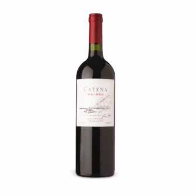
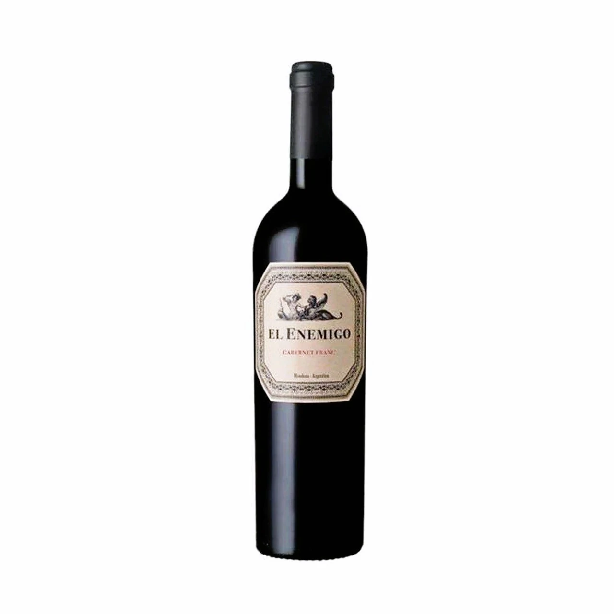
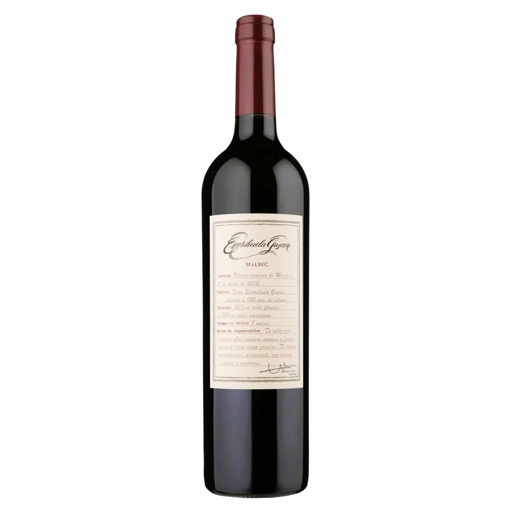

Promociones

Bodega Catena Zapata
Fundada en 1902, Bodega Catena Zapata es reconocida por su rol pionero
en haber hecho resurgir la variedad Malbec y haber descubierto
los terroirs de altura extrema al pie de los Andes.

Bodega El Enemigo
Los vinos son elaborados con criterios de sostenibilidad y el más alto respeto por el terruño.
La finca cuenta con un programa de reciclaje de residuos y ahorro de agua.

Bodega Escorihuela Gascón
Fundada en 1884 con el compromiso de elaborar los vinos que
representan a la Argentina en el mundo por su elegancia y calidad.